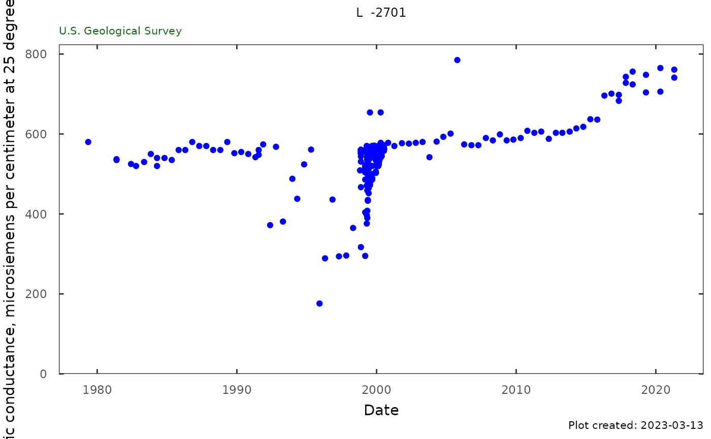

Specific conductance and chloride
sc_cl.RdFunctions to create the individual chloride, specific conductance, and combination plots and tables for a single site.
Sc_Cl_plot(qw_data, plot_title) Sc_Cl_table(qw_data) qw_plot(qw_data, plot_title, pcode = c("00095", "90095")) qw_summary(qw_data, pcode, norm_range = NA)
Arguments
| qw_data | data frame returned from dataRetrieval::readNWISqw, must include columns sample_dt, parm_cd, result_va |
|---|---|
| plot_title | character |
| pcode | character pcode to plot |
| norm_range | a numerical range to potentially group the data. If NA, no grouping is shown. |
Examples
# site <- "263819081585801" # parameterCd <- c("00095","90095","00940","99220") # site_data <- dataRetrieval::readNWISqw(site, # parameterCd) # Using package example data: qw_data <- L2701_example_data$QW plot_title <- paste(attr(qw_data, "siteInfo")[["station_nm"]], ": Specific Conductance vs Chloride") Sc_Cl_plot(qw_data, plot_title)sc_cl <- Sc_Cl_table(qw_data) plot_title <- attr(qw_data, "siteInfo")[["station_nm"]] qw_plot(qw_data, plot_title, pcode = c("00095", "90095"))#> Analysis Result #> 1 Date of first sample 1978-09-06 #> 2 First sample result (mg/l) 52 #> 3 Date of last sample 2019-04-17 #> 4 Last sample result (mg/l) 113 #> 5 Date of first sample within 225 to 999 mg/l #> 6 Date of first sample with 1000 mg/l or greater #> 7 Minimum (mg/l) 14 #> 8 Maximum (mg/l) 113 #> 9 Mean (mg/l) 59.3 #> 10 First quartile (mg/l) 54 #> 11 Median (mg/l) 58 #> 12 Third quartile (mg/l) 67.5 #> 13 Number of samples 78#> Analysis Result #> 1 Date of first sample 1979-05-09 #> 2 First sample result (uS/cm @25C) 580 #> 3 Date of last sample 2019-04-17 #> 4 Last sample result (uS/cm @25C) 748 #> 5 Minimum (uS/cm @25C) 176 #> 6 Maximum (uS/cm @25C) 785 #> 7 Mean (uS/cm @25C) 550 #> 8 First quartile (uS/cm @25C) 543 #> 9 Median (uS/cm @25C) 560 #> 10 Third quartile (uS/cm @25C) 568 #> 11 Number of samples 388